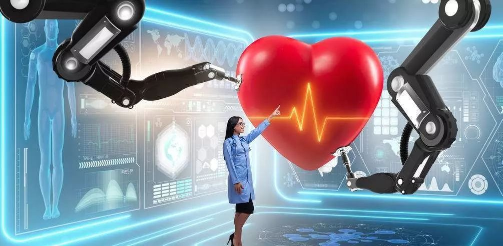
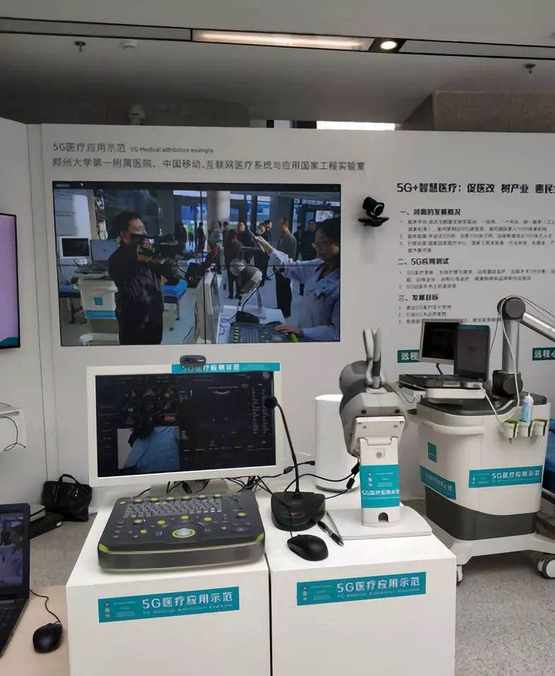
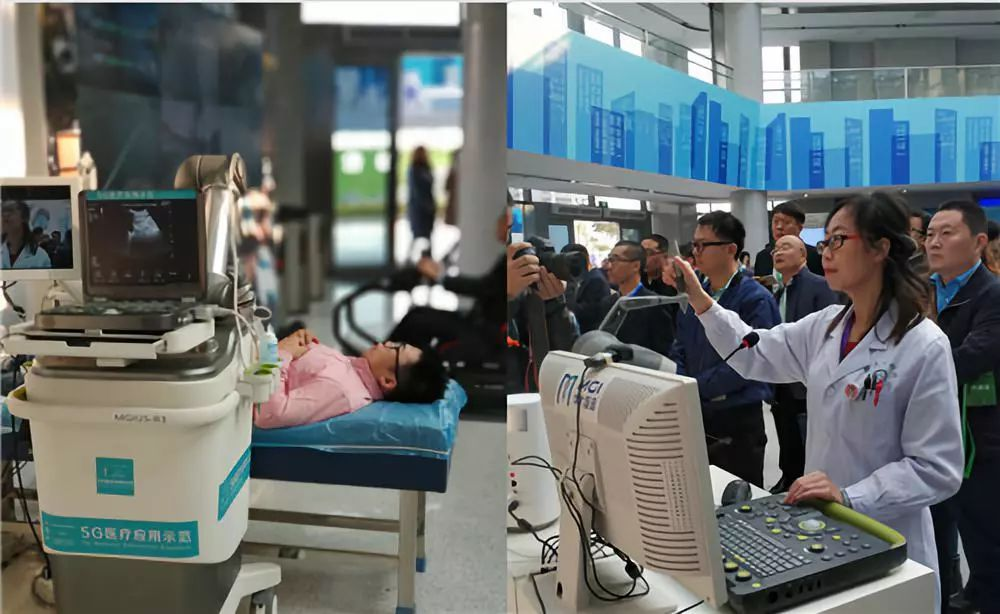
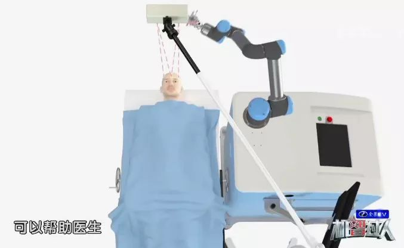

2020年的一天，成都一位出车祸的病人心脏严重受伤，正在接受外科手术。令人惊讶的是，手术台上并没有主刀医生，而是一只精密的机械手臂担任“医生”正在为病人进行手术。手术台的另一端，千里之外，北京协和医院的心胸外科专家，利用VR虚拟现实技术，将病人的心脏完全投影出来，而他只需要像真实的手术一样，做着各种手术动作，千里之外的机械手臂就会零延迟地和他同步动作，为病人手术。

这不是科幻，这就是未来5G为医疗带来的革命性变化！5G最大的特点在于零延迟，这样就确保了医疗手术的同步进行，因为在医学中，如果通过远程遥控，哪怕0.1秒的延迟，也会带给病人生命危险。5G克服了4G技术的延迟，这就是5G的神奇所在！

借助移动5G技术，一个小小的无线B超探头就是一个操作柄，可以操控远程医疗另一端机器臂。病人躺在家乡的检查床上，千里之外的专家医生对病人的身体情况即可一目了然。这大大有利于提高医护人员的工作效率。

查房机器人与5G网络结合在一起，将大大提高医生工作效率、实现医生实时远程查房，远端医生通过操纵杆或者手机，通过5G网络控制机器人移动到病床前，通过机器人头部的屏幕和摄像机，与患者进行高清的视频交互，同时机器人还具备多种传感器，能够采集病人生化数据，帮助医生进行辅助判断。
据统计，中国有近300万帕金森患者，居世界第一。著名数学家陈景润先生在晚年也曾受帕金森病的困扰。 而目前，我国能做这项神经外科手术的医生仅有100名。
在央视综合频道CCTV-1《机智过人》最近的一期里，重点介绍了脑手术机器人利用立体定向技术辅助治疗帕金森病并成功的案例。
5G就是一场革命，它以技术为驱动，从人与人的连接延伸到万物互联，从个人和家庭延伸到社会各个领域，进而为社会经济、生活带来革命性的影响。 5G为医疗带来的影响是巨大且深远的，而选对家的位置也显得特别的重要。 可以让你在5G网络时代还没有全民共享时，避免漫长的挂号等待、拥挤的就医环境、稀缺的优质医疗资源等烦恼！
